Headless Chrome met sheet.html, geen spelbelichting; niets hiervan is in het spel zelf bekeken. Het Quaternius-origineel (Car.glb, CC0) wordt
buiten git geladen uit C:\Users\abuis\gde-assets\quaternius\cars\pack en is alleen op deze machine te zien.
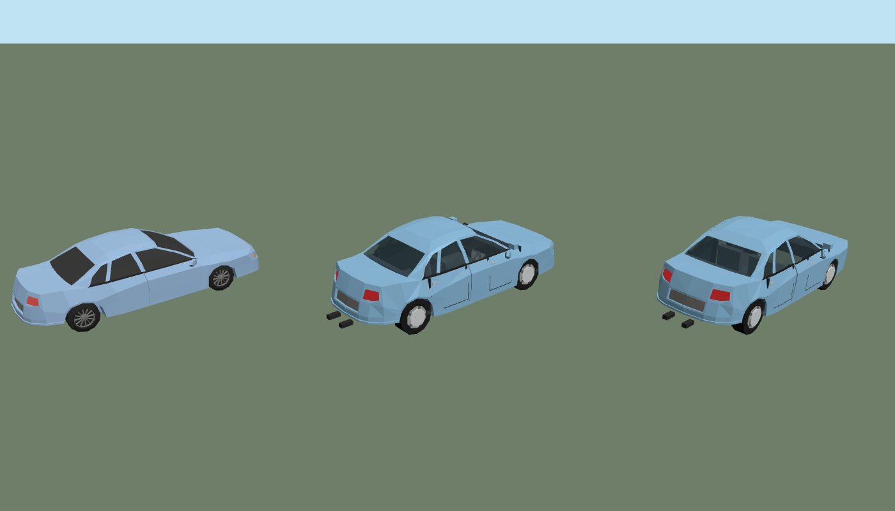
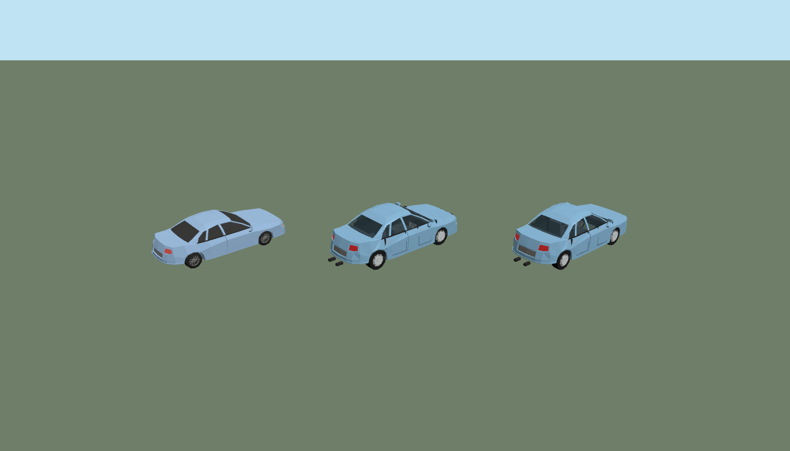
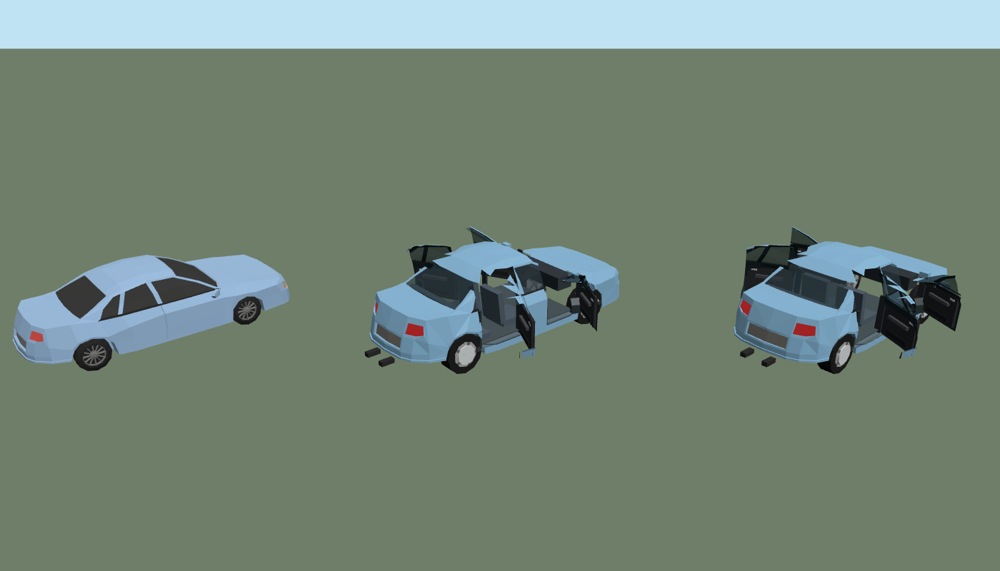
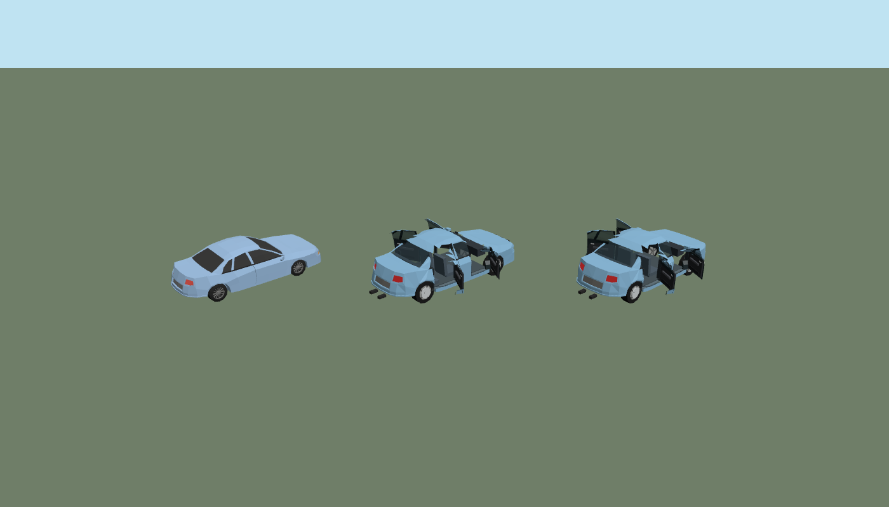
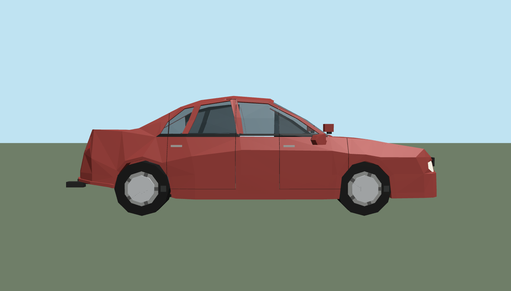
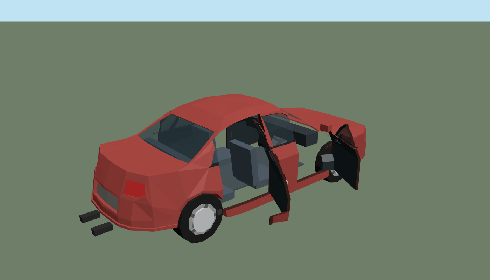
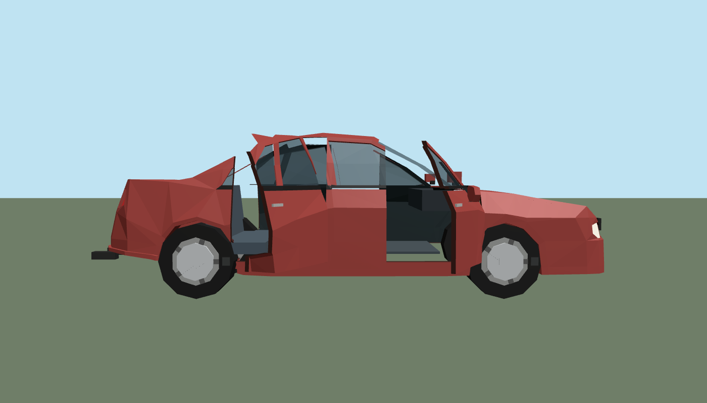
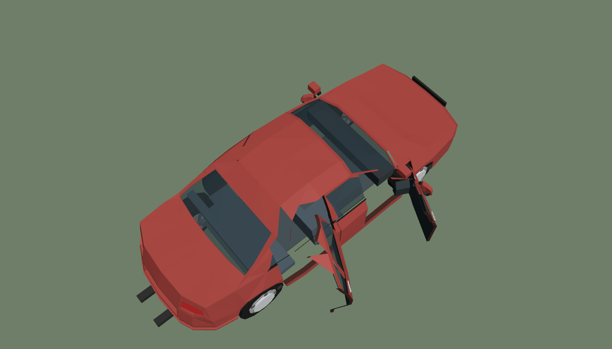
De deur is langs de contour uit de romp geknipt (driehoeken die de contour snijden worden gesplitst), met een kier van 4 mm; langs elke snede een rand met dikte (6 cm in de opening, 3,5 cm aan de deur). Alleen de opzij gekeerde flank wordt geknipt (boven de raamlijn alleen de zijruit en zijn lijst), dus geen stukken dak, voorruit of C-stijl aan de deur. Het platte zwarte vlak dat hun model binnenin op raamhoogte heeft, is weg. scripts/deursnipper_test.mjs faalt bij een losse snipper (kleiner dan 4 cm2, binnen 5 cm van de contour, aan niets vast).
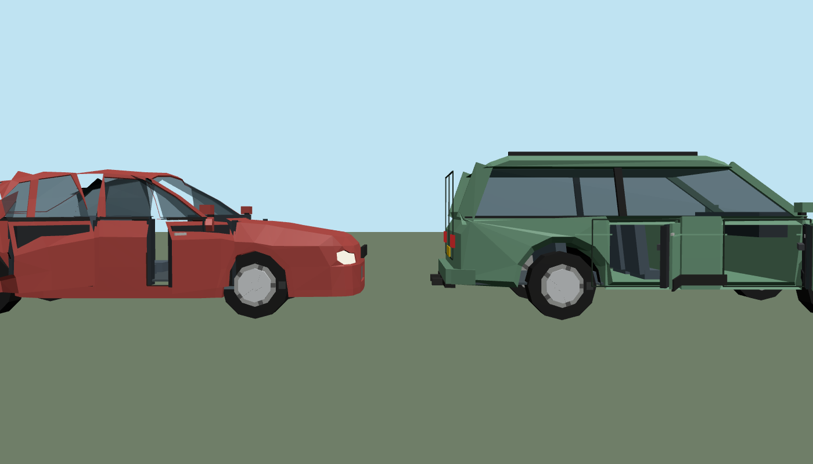
Ter vergelijking dicht: de deur vult het gat.
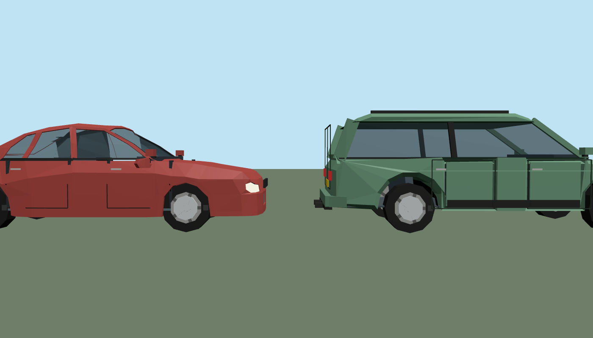
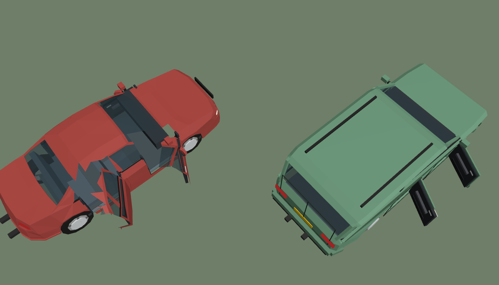
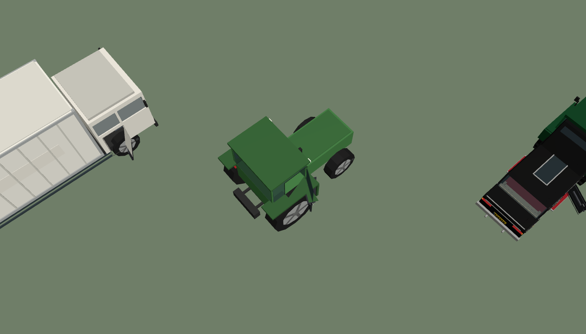
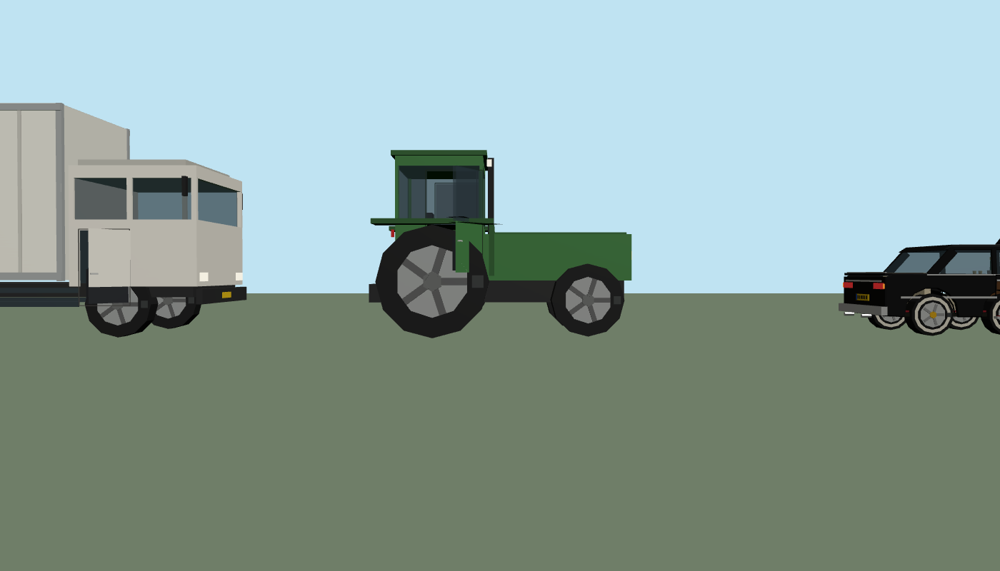
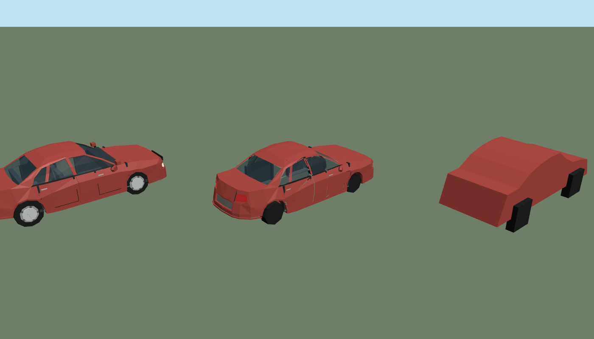
| Functie | Stand | Test |
|---|---|---|
| Echte deuropening (geen romp in het gat, open: interieur of overkant, dicht: geen kier) | Hybrides, onze eigen auto's, bestelbus, bakwagen, trekker, trekker-limo | deuropening_test.mjs |
| Geen losse scherven langs de opening | Romp en deurbladen van alle hybrides en blokkenrompen | deursnipper_test.mjs |
| Deurblad in de vorm van de romp, met dikte, binnenkant en handvat | Hybride: uitgeknipt stuk romp; blokkenrompen: uitgeknipt zijvlak; eigen auto's: vlak paneel in het gat | vehicledoors3d_test.mjs |
| Wielen draaien en sturen, kleur, lampen, schade met losse delen en hangende bumper | Werkt | hybridecar_test.mjs |
| Schaal (lengte, breedte, hoogte, wielbasis, wiel, deuropening, hoofd onder het dak) | Alle hybrides binnen de norm | voertuigschaal_test.mjs |
| Botsmaat = getekende maat | Alle hybrides (binnen 3 cm) | botsmaat_test.mjs |
| LOD's met dither | Alle voertuigen behalve fiets, step, paard (berijder) en boten (die doet het centrale systeem zelf) | vehiclelod_test.mjs (met de audit van lodregistry.js) |
| Politie, taxi | Hybride met lichtbalk, knipperende lampen, strepen (op de deur mee), taxibord | deuropening_test.mjs, botsmaat_test.mjs |
| Ambulance, Escapade, roest, tokkie, elektrisch, tuning, stationwagen, bestelbus | Onze eigen bouwer (met echte deurgaten) | voertuigmodel_test.mjs |
| Model | Niveau 0 | 1 (vanaf 35 m) | 2 (vanaf 90 m) |
|---|---|---|---|
| Hybride sedan | 3.553 | 1.817 | 92 |
| Hybride SUV | 3.938 | 2.046 | 92 |
| Hybride politie | 3.783 | 1.975 | 92 |
| Stationwagen (eigen bouwer) | 2.384 | 934 | 92 |
| Bus | 3.384 | 1.210 | 92 |
| Trekker-limo | 5.970 | 1.902 | 92 |
Ter vergelijking: onze eigen sedan was vóór deze ronde 1.908 driehoeken in 12 meshes, zonder LOD. Het knippen van de deuren en de deurbladen kost op niveau 0 meer, alleen binnen 35 m.